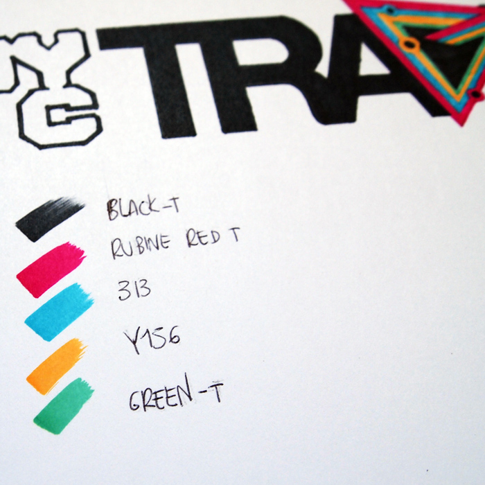

NYC Travel
Branding and developement of a concept.
"He loved New York". This is how 'Manhattan' from Woody Allen opens and this is where my idea came from.
Following the locations of where directors, artists and writers located and shot their stories, I developed a campaign aimed to the promotion of the city as final project at the Italian State Institute of Arts.
The idea is to let people, tourists or locals, rediscover New York City under different eyes and fall in love with the Big Apple for the first time, or once again.

Simple colors and shapes create a clear recognizable logo and are the base for all the designs.

Ideally the campaign would be advertised and sponsored by american brands like the Rockefeller Center and Starbucks on everyday items.